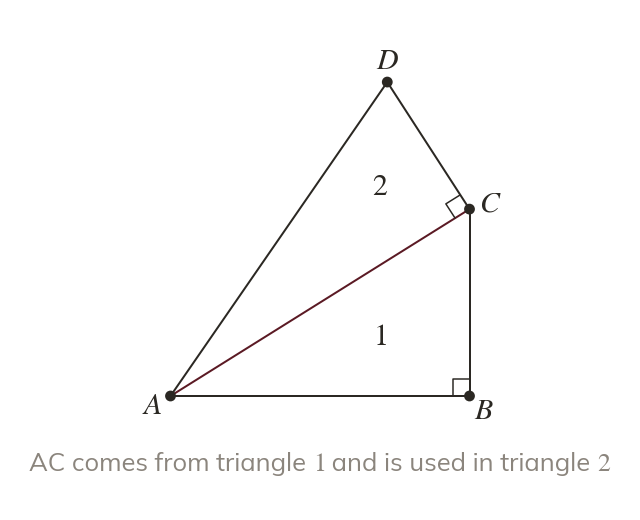
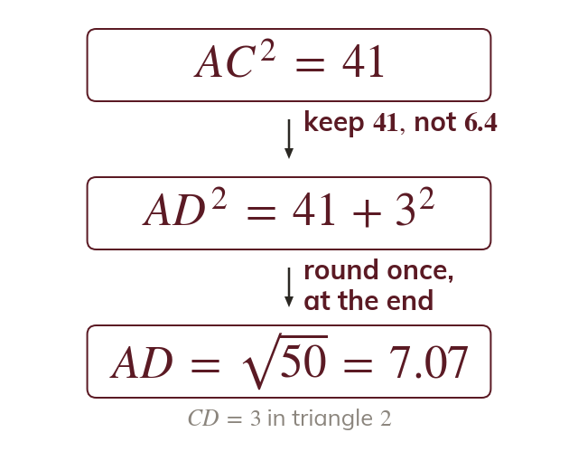
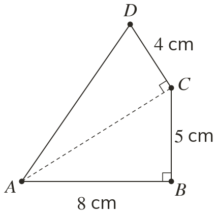
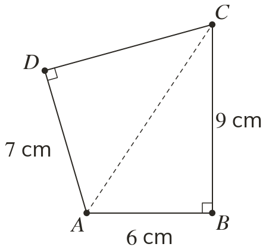
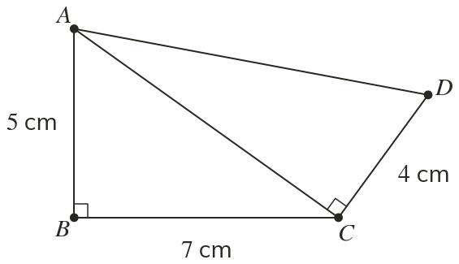
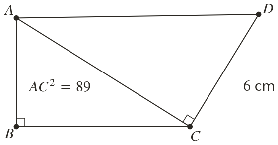
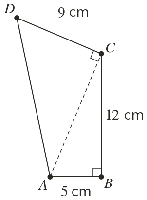
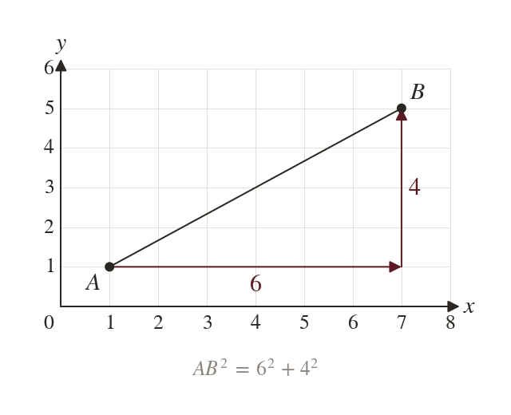
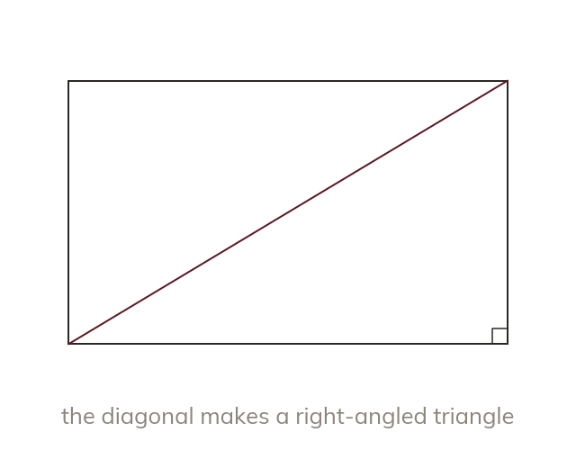
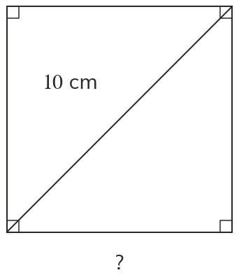

Two triangles, one chain
A multi-step problem chains two uses of the theorem. The first result becomes an input to the second.
A shortcut across a field, a diagonal through a frame or the distance between two points on a map each hides a right-angled triangle, and sometimes two. Chaining Pythagoras finds them all.
Work down the page at your own pace. Write every answer in your book first, then click to check it.
Read each card, then follow the worked examples one step at a time.

A multi-step problem chains two uses of the theorem. The first result becomes an input to the second.

Keep the exact value until the end. Rounding early carries its error into the answer. The calculator's store function holds it.


Pick an answer. If it's wrong, the feedback tells you which mistake it was.



Read each card, then follow the worked examples one step at a time.

The horizontal and vertical differences are the shorter sides. The distance between the points is the hypotenuse.

Inside a shape, find or draw a right-angled triangle first. A rectangle's diagonal makes one.
Pick an answer. If it's wrong, the feedback tells you which mistake it was.

Finished? Next lesson: 8.11.4 Pythagoras in Isosceles Triangles.
Log in, then search for a code to practise that skill.